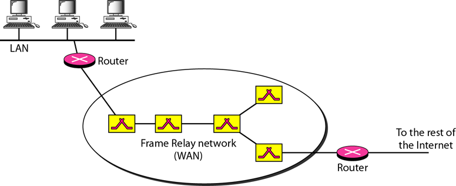
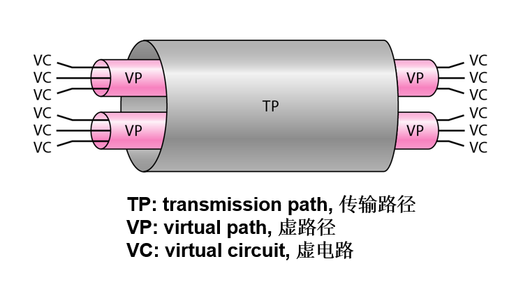
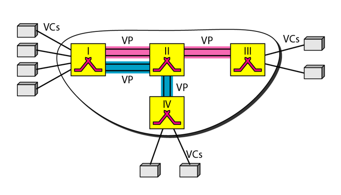

第 18 章 虚电路网络：帧中继和 ATM
一. 帧中继
帧中继的特征、帧中继的结构、永久虚电路、呼叫虚电路
帧中继的特征
- 以较高的速率（1.544Mbps以及最近的44.376Mbps）工作
- 工作在物理层和数据链路层
- 允许突发性数据
- 允许的帧大小为9 000字节，适合于所有的局域网帧
- 帧中继比其他传统的广域网花费少
- 帧中继仅在数据链路层有错误检测，没有流量或错误控制。->不需要序列号
- 帧中继中的 VCI (虚电路标识符) 称作 DLCI
VCI: Virtual Circuit Identifer
DLCI: DataLink Connection Identifer
帧中继的结构

永久虚电路PVC
PVC: Permanent Virtual Circuit
- 由管理员为所有的交换机建立统一设置: 源地址分配一个 VCI, 目的地址分配一个 VCI
- 缺点:
- 花费大, 即使未使用也需一直付费 (因为连接一直存在)
- 只能在一个源地址和一个目的地址间建立连接
交换虚电路SVC
SVC: Switched Virtual Circuit
- 建立短的, 临时的连接
- 需要连接建立和终止阶段
- 该连接只存在于源地址和目的地址的数据传输过程中。
二. 异步传输模式ATM
ATM: Asychoronous Transfer Mode
ATM 的特征、信元的结构、虚路径 VP、虚电路 VC、VCI
特征
- 定义了三个层，分别为应用适配层，ATM层和物理层
- 物理层：信元可以在任何物理层介质中传输
- ATM层：提供路由、通信量管理、交换和复用服务
- 应用适配层：用来支持两个ATM概念
- 高速互联, 作为网间主干互联的协议
- 面向连接, 提供准确可预测的传输
- 是信元网络, 采用固定大小的信元作为数据交换的基本单位
- 可以避免多路复用时先到达的大型帧对后到达的小型帧的长时间阻塞
- 采用异步的时分复用 (TDM) 实现多路复用
信元
- ATM网络中的基本数据单元称为信元。
- 信元网络使用信元作为数据交换的基本单位.信元定义为一个小的、固定大小的信息块.
- 一个信元只有53字节长度，其中5个字节为头部， 48个字节为有效载荷（用户数据可能少于48个字节）。
传输路径 TP
- Transmission Path
- 是端点与交换机之间, 或两交换机之间的所有物理连接
- 类似于连接两个城市的高速公路的集合
虚路径 VP
- Virtual Path
- 两个交换机之间的一条或多条连接的集合
- 类似于两城市间的一条高速公路
虚电路 VC
- Virtual Circuit
- 信元网络基于虚电路
- 属于同一报文的所有信元沿着同一条虚电路传输, 同时保持先后次序
通过 VPI 和 VCI 来定义一个虚连接, 前者定义特定 VP, 后者定义特定 VC

TP VP VC 间关系

VP和VC的例子